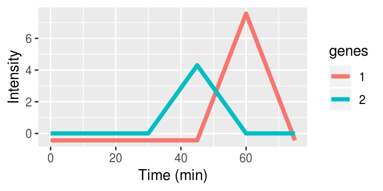
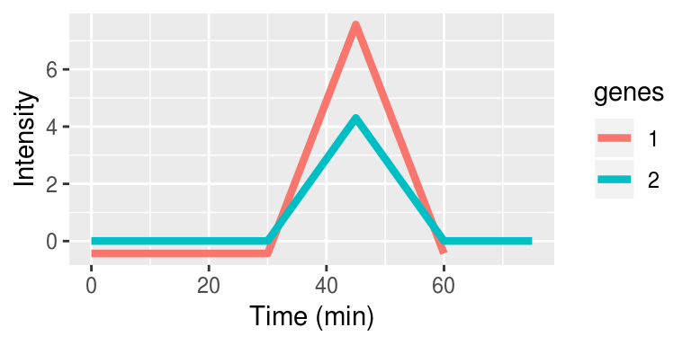
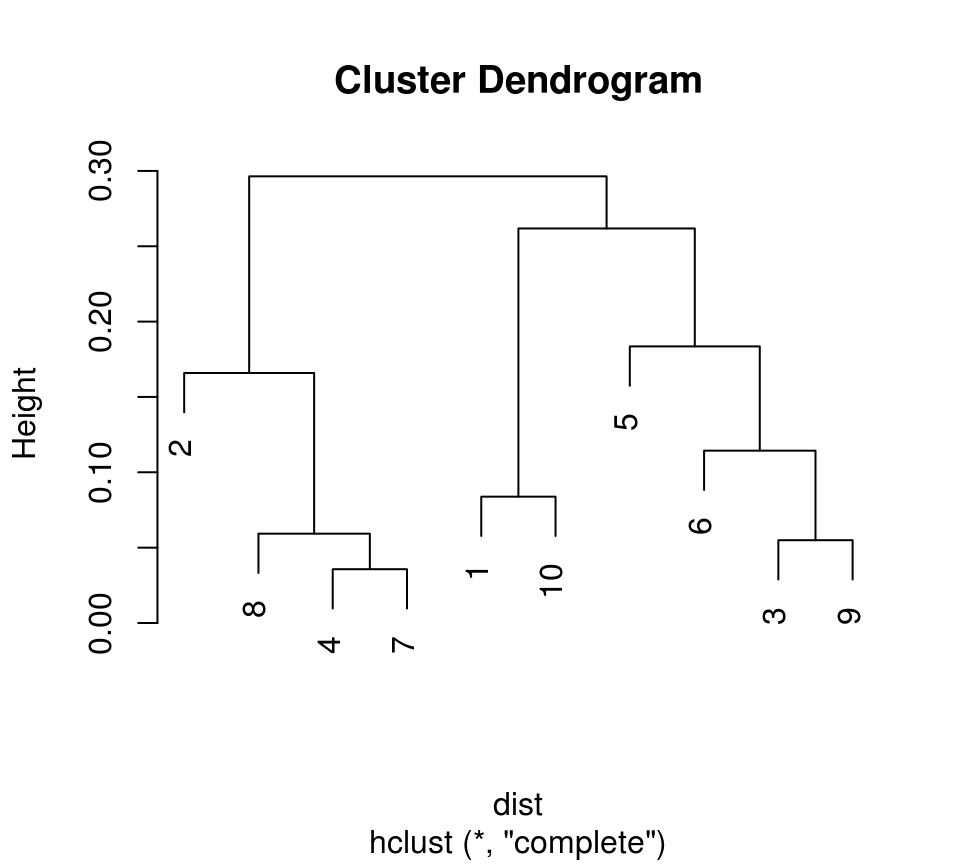

LPWC: Lag Penalized Weighted Correlation for Clustering Short Time Series
Thevaa Chandereng & Anthony Gitter
Source:vignettes/LPWC.Rmd
LPWC.RmdIntroduction
Time series data are a series of observations collected across different timepoints in which the ordering of the observations can convey important information. In biology, most time series data consist of a limited number of time points, complicating the analysis. An example of biological time series data is gene expression data, where the relative abundances of all genes are recorded over multiple minutes, hours, days, or weeks.
One property of a good clustering method for time series data is that it groups similar temporal shapes. Similarity in expression patterns may correspond to similarity in biological function, which helps aid in the direction of future research. Lag Penalized Weighted Correlation (LPWC) is a distance-based clustering algorithm that builds upon weighted correlation. LPWC aligns time series data to accommodate lags, allowing two entities (for example, genes) that exhibit similar temporal behaviors that are not perfectly synchronized to be clustered together. Lags are penalized using a Gaussian kernel so that synchronized temporal patterns are preferred over lagged patterns. Unlike many other clustering approaches, LPWC also accounts for irregular time sampling in which there are non-uniform intervals between timepoints.
If you use LPWC in published research, please cite our preprint:
Lag Penalized Weighted Correlation for Time Series Clustering. Thevaa Chandereng, Anthony Gitter. bioRxiv 2018. doi:10.1101/292615
If after reading through this vignette you have questions or problems using LPWC, please post them to https://github.com/gitter-lab/LPWC/issues. This will notify the package maintainers and benefit other users.
You should not email your question to the package authors, as we will just reply that the question should be posted to the Github support site.
Running LPWC
Prior to analyzing your data, the R package needs to be installed.
The easiest way to install LPWC is through CRAN:
There are other additional ways to download LPWC. The first option is most useful if want to download a specific version of LPWC (which can be found at https://github.com/gitter-lab/LPWC/releases).
devtools::install_github("gitter-lab/LPWC@vx.xx.x")
#OR
devtools::install_version("LPWC", version = "x.x.x", repos = "http://cran.us.r-project.org")The second option is to download through GitHub.
checking for file ‘/tmp/RtmpR3JpX9/remotes350c6f237759/gitter-lab-LPWC-2651646/DESCRIPTION’ …
checking for file ‘/tmp/RtmpR3JpX9/remotes350c6f237759/gitter-lab-LPWC-2651646/DESCRIPTION’ …
✔ checking for file ‘/tmp/RtmpR3JpX9/remotes350c6f237759/gitter-lab-LPWC-2651646/DESCRIPTION’
─ preparing ‘LPWC’:
checking DESCRIPTION meta-information …
✔ checking DESCRIPTION meta-information
─ checking for LF line-endings in source and make files and shell scripts
─ checking for empty or unneeded directories
─ looking to see if a ‘data/datalist’ file should be added
─ building ‘LPWC_0.99.4.tar.gz’
#> Installing package into '/home/travis/R/Library'
#> (as 'lib' is unspecified)After successful installation, the package must be loaded into the working space:
Required input
Data: Input to LPWC is a matrix or data frame. We assume here that it is gene expression data, but other data types are suitable as well. The expression matrix should be n -by- p where n is the number of genes (in rows) and p is the number of timepoints. If data is a data frame, the gene names can be specified using the row.names().
The object simdata is a simulated dataset for 200 genes with 8 timepoints that follow the biological impulse model. This is stored as a data frame in the package with row names representing gene labels.
data(simdata)
simdata[1:5, ]
#> Time_ 1 Time_ 2 Time_ 3 Time_ 4 Time_ 5 Time_ 6 Time_ 7
#> Gene_ 1 13.180777 17.125143 15.770959 16.541127 22.20278 29.60190 30.59476
#> Gene_ 2 24.022276 23.549481 20.717807 30.725417 39.31060 33.87521 36.15077
#> Gene_ 3 13.808949 15.585296 14.682402 22.498271 28.18709 28.53901 27.99949
#> Gene_ 4 9.527839 6.639082 8.841857 9.724606 18.98756 22.94803 24.47678
#> Gene_ 5 13.682422 10.835738 18.088811 20.666888 26.19007 25.95533 26.82196
#> Time_ 8 Time_ 9 Time_ 10
#> Gene_ 1 31.43318 20.22925 18.89403
#> Gene_ 2 35.95496 29.87581 29.61810
#> Gene_ 3 34.25247 23.11201 26.29722
#> Gene_ 4 26.75902 19.61690 21.17882
#> Gene_ 5 24.18250 21.13418 19.65256
str(simdata)
#> 'data.frame': 200 obs. of 10 variables:
#> $ Time_ 1 : num 13.18 24.02 13.81 9.53 13.68 ...
#> $ Time_ 2 : num 17.13 23.55 15.59 6.64 10.84 ...
#> $ Time_ 3 : num 15.77 20.72 14.68 8.84 18.09 ...
#> $ Time_ 4 : num 16.54 30.73 22.5 9.72 20.67 ...
#> $ Time_ 5 : num 22.2 39.3 28.2 19 26.2 ...
#> $ Time_ 6 : num 29.6 33.9 28.5 22.9 26 ...
#> $ Time_ 7 : num 30.6 36.2 28 24.5 26.8 ...
#> $ Time_ 8 : num 31.4 36 34.3 26.8 24.2 ...
#> $ Time_ 9 : num 20.2 29.9 23.1 19.6 21.1 ...
#> $ Time_ 10: num 18.9 29.6 26.3 21.2 19.7 ...Timepoints: The object timepoints should be a vector of timepoints that specify when the data were collected. This should match the column length in Data. This can be in any form (seconds, minutes, hours, or even days), but make sure the units are uniform throughout.
The timepoints used in the example simdata are
Data and Timepoints are the main requirement to run LPWC, however, there are other optional parameters that affect the results. Our manuscript referenced above describes these parameters in more detail.
Max.lag: The object max.lag should be an integer value that controls the maximum lag. This max.lag has to be less than the floor of length(timepoints) / 4. That is because longer lags lead to comparisons between two expression profiles that use less than half of the data points, which can lead to spurious correlations.
C: The object C should be a numeric. This controls the width of the Gaussian kernel function used to penalize the lag and the weights in weighed correlation vector. The parameter C can be set automatically by setting C to the default NULL value and setting the penalty argument described below. If C is set to a specific value, the penalty is ignored.
penalty: The object penalty only allows two values: “low” and “high”. It is used to automatically set the value of C. High imposes a higher penalty on lags thus favoring grouping genes without introducing lags. The lower penalty leads to more lagged genes in the clusters. The default is set to the “high” penalty. This argument is ignored if C is set to a specific value.
iter: The object iter should be a numeric. This controls the number of values of C that are tested when automatically setting the C parameter. The default is 10. Increasing iter increases computational time. This is only relevant for the low penalty because the high penalty uses a single C instead of searching over multiple C.
Interpreting lags
Lags are taken with respect to the original timepoints vector. Lags can be positive or negative integers and specify the number of indices to shift the timepoints. The examples below demonstrate applying different lags to genes 1 and 2.

| Original | 0 | 5 | 15 | 30 | 45 | 60 | 75 |
| Gene1 | 0 | 5 | 15 | 30 | 45 | 60 | 75 |
| Gene2 | 0 | 5 | 15 | 30 | 45 | 60 | 75 |

| Original | 0 | 5 | 15 | 30 | 45 | 60 | 75 |
| Gene1 | 5 | 15 | 30 | 45 | 60 | 75 | - |
| Gene2 | 0 | 5 | 15 | 30 | 45 | 60 | 75 |

| Original | 0 | 5 | 15 | 30 | 45 | 60 | 75 |
| Gene1 | 5 | 15 | 30 | 45 | 60 | 75 | - |
| Gene2 | - | 0 | 5 | 15 | 30 | 45 | 60 |
The time series plots show aligned expression vectors, and the tables show the aligned timepoints. With no lags, the temporal profiles of genes 1 and 2 are not aligned so the gene pair will have a low LPWC similarity score (top row). When gene 1 has a lag of -1, the patterns are aligned, and the LPWC similarity score will be high (middle row). Finally, when gene 1 has a lag of -1 and gene 2 has a lag of 1, the temporal shapes are once again not aligned. In this case, the LPWC similarity score will be even lower than in the no lag case because the penalty for introducing lags is applied (bottom row).
Obtaining gene-gene similarities
LPWC computes similarity (an adjusted weighted correlation) between genes and returns three outputs: correlation of genes in dist form (see as.dist), the best lag used for each gene, and the C used. The lags introduced are in reference to the original time points (i.e. lag of 0).
An example output of LPWC for 10 genes using high penalty follows:
LPWC::corr.bestlag(simdata[49:58, ], timepoints = timepoints, max.lag = 2, penalty = "high", iter = 10)
#> $corr
#> Gene_ 49 Gene_ 50 Gene_ 51 Gene_ 52 Gene_ 53
#> Gene_ 50 0.851923851
#> Gene_ 51 -0.218237490 0.185296315
#> Gene_ 52 -0.503013415 -0.185206626 0.820661318
#> Gene_ 53 -0.459664840 -0.098109602 0.846568127 0.902530166
#> Gene_ 54 -0.299615918 0.147669259 0.942905074 0.707652473 0.725611385
#> Gene_ 55 -0.324090620 0.008691392 0.801844343 0.827065718 0.783988169
#> Gene_ 56 -0.311218630 0.145879675 0.958900623 0.806729108 0.821231416
#> Gene_ 57 -0.177943816 0.183155731 0.818514482 0.584610971 0.733599647
#> Gene_ 58 -0.412958564 0.050367297 0.943102621 0.773563872 0.818502367
#> Gene_ 54 Gene_ 55 Gene_ 56 Gene_ 57
#> Gene_ 50
#> Gene_ 51
#> Gene_ 52
#> Gene_ 53
#> Gene_ 54
#> Gene_ 55 0.686430019
#> Gene_ 56 0.961429975 0.712528238
#> Gene_ 57 0.803809413 0.756633891 0.740717669
#> Gene_ 58 0.951300777 0.727622247 0.937457260 0.748985339
#>
#> $lags
#> Gene_ 49 Gene_ 50 Gene_ 51 Gene_ 52 Gene_ 53 Gene_ 54 Gene_ 55 Gene_ 56
#> 0 1 0 0 0 0 0 0
#> Gene_ 57 Gene_ 58
#> 0 0
#>
#> $C
#> [1] 306.2401However, many clustering algorithms, such as hierarchical clustering, take distances as input instead of similarities. We convert the similarities to distances by subtracting the similarities from 1. Initially
\[ -1 \leq Corr \leq 1\]
When we take Dist = 1 - Corr
\[ 0 \leq Dist = (1 - Corr) \leq 2\]
Generating clusters using hierarchical clustering
LPWC computes a similarity matrix and does not directly cluster the genes. A standard similarity-based clustering algorithm such as hierarchical clustering can be applied to the LPWC similarities.
An example for 10 genes:
dist <- 1 - LPWC::corr.bestlag(simdata[11:20, ], timepoints = timepoints, max.lag = 2, penalty = "low", iter = 10)$corr
plot(hclust(dist))
The genes can also be assigned to clusters using cutree function. An example of cluster assignment with 3 clusters:
Filtering genes
Because \(corr(x, y) = \frac{cov(x, y)}{\sqrt{var(x) var(y)}}\), the variance of genes x and gene y needs to be > 0. If any gene has 0 variance, the functions corr.bestlag and best.lag will stop with the error: At least one of the genes has 0 variance! This code can be used to filter data and remove genes with 0 variance before running LPWC.
Ideally, it is better to run LPWC only with genes that are significantly differentially expressed over time.
Contributors
Our development of LPWC benefited from help and feedback from many individuals, including but not limited to:
Wenzhi Cao, Karl Broman, Jen Birstler, James Dowell, Ron Stewart, John Steill, leungi (Github user), Gitter Lab members.
Session info
sessionInfo()
#> R version 3.5.2 (2017-01-27)
#> Platform: x86_64-pc-linux-gnu (64-bit)
#> Running under: Ubuntu 14.04.5 LTS
#>
#> Matrix products: default
#> BLAS: /home/travis/R-bin/lib/R/lib/libRblas.so
#> LAPACK: /home/travis/R-bin/lib/R/lib/libRlapack.so
#>
#> locale:
#> [1] LC_CTYPE=en_US.UTF-8 LC_NUMERIC=C
#> [3] LC_TIME=en_US.UTF-8 LC_COLLATE=en_US.UTF-8
#> [5] LC_MONETARY=en_US.UTF-8 LC_MESSAGES=en_US.UTF-8
#> [7] LC_PAPER=en_US.UTF-8 LC_NAME=C
#> [9] LC_ADDRESS=C LC_TELEPHONE=C
#> [11] LC_MEASUREMENT=en_US.UTF-8 LC_IDENTIFICATION=C
#>
#> attached base packages:
#> [1] stats graphics grDevices utils datasets methods base
#>
#> other attached packages:
#> [1] ggplot2_3.1.0 LPWC_0.99.4
#>
#> loaded via a namespace (and not attached):
#> [1] Rcpp_1.0.0 highr_0.7 pillar_1.3.1
#> [4] plyr_1.8.4 compiler_3.5.2 prettyunits_1.0.2
#> [7] remotes_2.0.2 tools_3.5.2 testthat_2.0.1
#> [10] digest_0.6.18 pkgbuild_1.0.2 pkgload_1.0.2
#> [13] tibble_2.0.1 gtable_0.2.0 evaluate_0.13
#> [16] memoise_1.1.0 pkgconfig_2.0.2 rlang_0.3.1
#> [19] cli_1.0.1 commonmark_1.7 curl_3.3
#> [22] yaml_2.2.0 pkgdown_1.3.0 xfun_0.5
#> [25] withr_2.1.2 stringr_1.4.0 roxygen2_6.1.1
#> [28] xml2_1.2.0 knitr_1.22 desc_1.2.0
#> [31] fs_1.2.6 devtools_2.0.1 grid_3.5.2
#> [34] rprojroot_1.3-2 glue_1.3.0 R6_2.4.0
#> [37] processx_3.2.1 rmarkdown_1.11 sessioninfo_1.1.1
#> [40] callr_3.1.1 magrittr_1.5 scales_1.0.0
#> [43] backports_1.1.3 ps_1.3.0 htmltools_0.3.6
#> [46] MASS_7.3-51.1 usethis_1.4.0 assertthat_0.2.0
#> [49] colorspace_1.4-0 labeling_0.3 stringi_1.3.1
#> [52] lazyeval_0.2.1 munsell_0.5.0 crayon_1.3.4FAQ
- How can I speed up LPWC for the low penalty with a large dataset?
We recommend parallelizing parts of the analysis, as shown below:
# This function stores two different list separately
comb <- function(x, ...) {
lapply(seq_along(x),
function(i) c(x[[i]], lapply(list(...), function(y) y[[i]])))
}
# adding the data
data <- simdata[1:10, ]
# number of iterations
iter <- 10
# C values that are used in the algorithm
allC <- findC(timepoints = timepoints, iter = iter)
# setting the clusters
core <- parallel::detectCores() - 1
cl <- parallel::makeCluster(core)
# assigning the parallelization
doParallel::registerDoParallel(cl)
## running the algorithm for different C
result <- foreach(i = 1:iter, .combine='comb', .multicombine=TRUE,
.init=list(list(), list())) %dopar% {
lags <- best.lag(data, max.lag = 3, timepoints = timepoints, C = allC[i])
new.data <- prep.data(data = data, lags = lags, timepoints = timepoints)
corr <- comp.corr(new.data$data, new.data$time, C = allC[i])
return(list(corr, lags))
}
# dividing the list into two different list: one for lags and one for all the correlations
allcorr <- result[[1]]
alllags <- result[[2]]
# picking best C
val <- rep(NA, (length(iter) - 1))
for(i in 1:(iter - 1)){
val[i] <- sum((as.vector(allcorr[[i + 1]]) - as.vector(allcorr[[i]]))^2)
}
# returning the results for the best C
result <- list(corr = allcorr[[which.min(val) + 1]], lags = alllags[[which.min(val) + 1]], C = values[which.min(val) + 1])